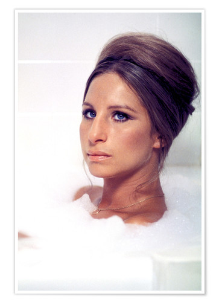
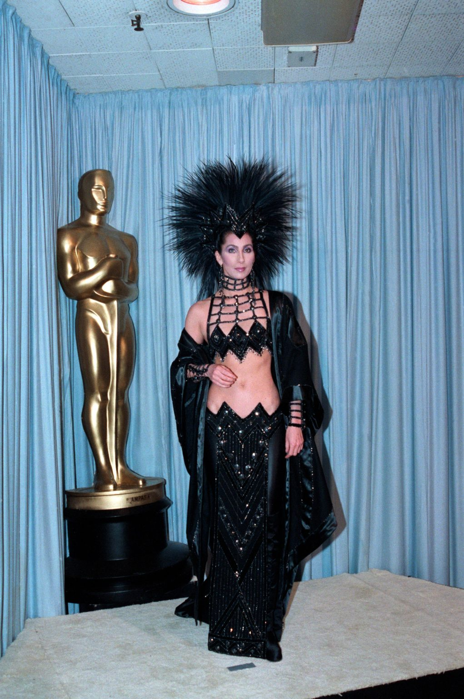
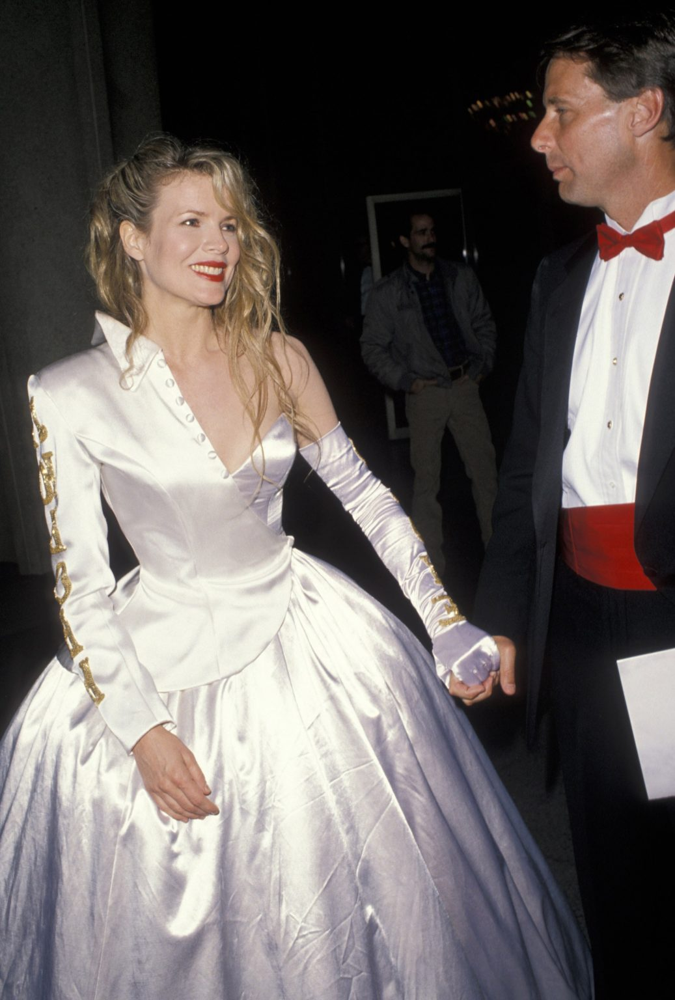
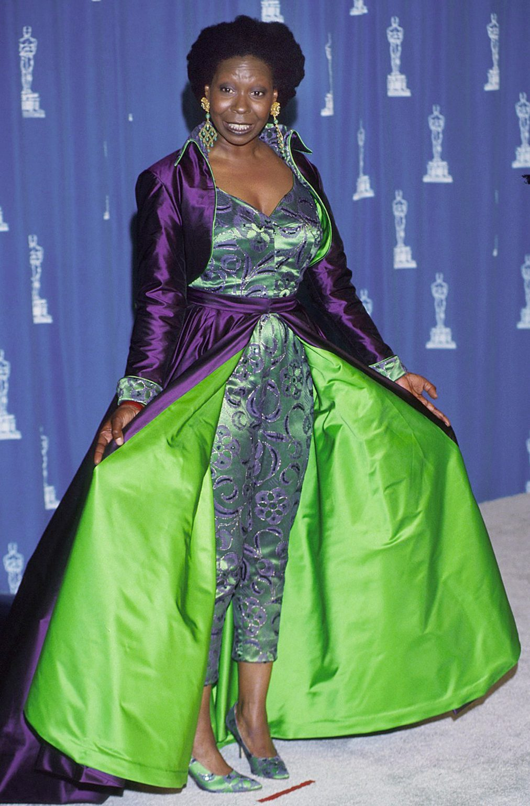
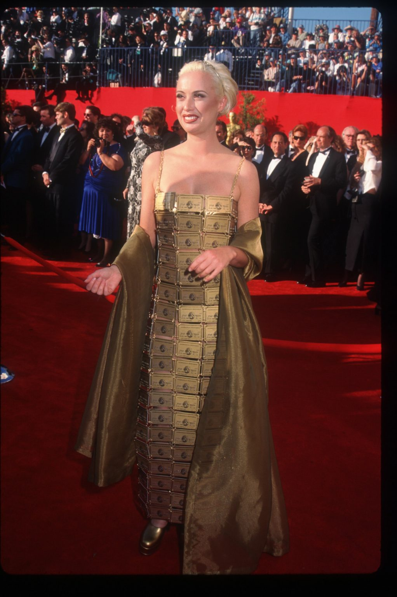
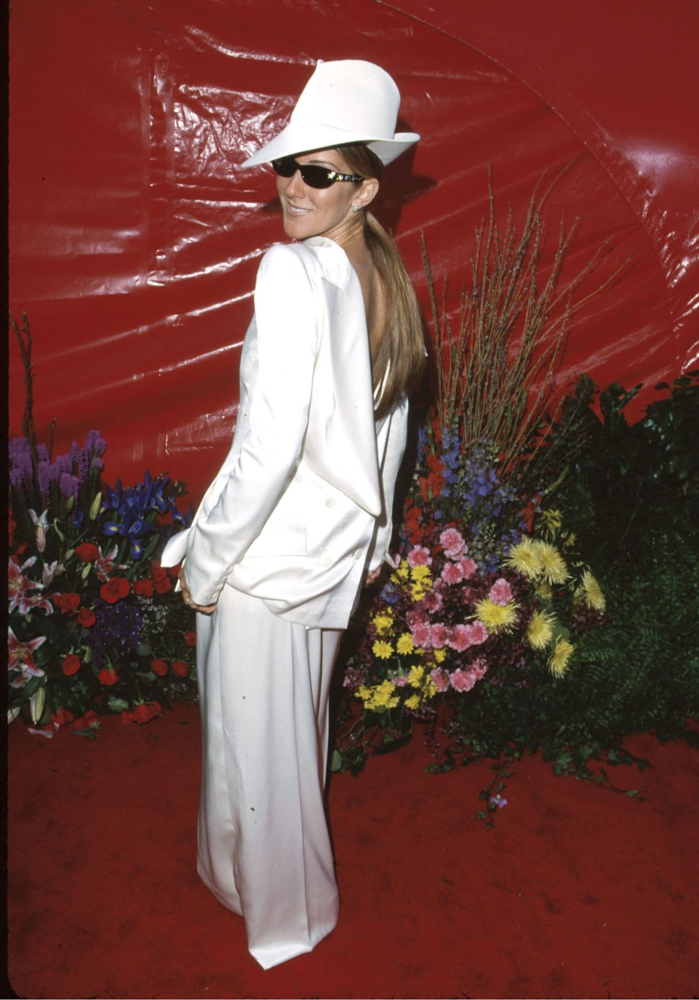

<!DOCTYPE html>
<html lang="en">
<head>
   <meta charset="UTF-8">
   <meta http-equiv="X-UA-Compatible" content="IE=edge">
   <meta name="viewport" content="width=device-width, initial-scale=1.0">
   <title>VOGUE</title>
</head>
<body>
   
</body>
</html>

<!-- верстка статьи Журнала-->
<header class="header">
MAGAZINE
</header>

<main class="main">
 <h1>VOGUE</h1>
</main>


       

<h2>Trands</h2>
<h3> 
   <a href=""> 
 6 fasion trands
    </a>
</h3>

<p>

6 fasion trands and bla bla bla <br>
fasion  <mark>Is my profesion </mark> cute 
<a href="http://en.wikipedia.org/wiki/Angelina_Jolie" target="_blank" class="link"> Angelina Jolie's </a> 
<a href=""> #RightLeg </a>  Social Media Moment Overshadow Her Atelier Versace Gown?
 Was <a href="http://en.wikipedia.org/wiki/Jennifer_Lawrence" target="_blank" class="link">Jennifer Lawrence's </a> 
 Dress
Worth the Trip It Caused? Many of the style choices have rich backstories, adding context and depth to red carpet
moments, such as why <a href="http://en.wikipedia.org/wiki/Billy_Porter_(actor)" target="_blank" class="link">Billy Porter</a> wore a dress in 2019 and not a tuxedo.

The truth is that fashion is subjective. What is the best outfit for one person may be the worst for another. But one
thing is clear: these looks really turned heads.<br>


<mark>15 looks at the Oscars that caused a stir, in chronological order.</mark>

</p>

<ul>

      <li> <a href="http://en.wikipedia.org/wiki/Barbra_Streisand" target="_blank" class="link">Barbra Streisand, 1969 </a> </li>
      <li><a href="http://en.wikipedia.org/wiki/Cher" target="_blank" class="link">Cher, 1986 </a> </li>
      <li><a href="http://en.wikipedia.org/wiki/Kim_Basinger" target="_blank" class="link">Kim Basinger, 1990 </a></Kim></li>
      <li><a href="http://en.wikipedia.org/wiki/Whoopi_Goldberg" target="_blank" class="link">Whoopi Goldberg, 1993 </a></li>
      <li><a href="http://en.wikipedia.org/wiki/Lizzy_Gardiner" target="_blank" class="link">Lizzy Gardiner, 1995 </a></li>
      <li><a href="http://en.wikipedia.org/wiki/Celine_Dion" target="_blank" class="link">Celine Dion, 1999</a> </li>


</ul>


<h4>Barbra Streisand, 1969 </h4>
      
      <p>
         When Barbra Streisand takes home the Best Actress award for her role in Funny Girl , the singer and actress wears an
         Arnold Scaasi crystal trouser suit and flared legs. The ensemble, which is almost completely translucent, causes quite a
         stir. The then 26-year-old Streisand later says that she had not taken into account the fragility of the outfit on the
         stage of the Oscars. “I had no idea the outfit would become see-through when the lights shone on it,” she said in an
         interview. "I thought to myself, I'm going to win two Oscars in my life, and I'll be a little more conservative next
         time."
      </p>

      <h4> Cher, 1986</h4>
      
      <p>
         Queen of drama, Cher, without a doubt, stole the red carpet in 1986. She wears a design by her regular designer Bob
         Mackie: a black sequin dress with a full torso flash , complete with a dramatic feathered headpiece. It's a real Las
         Vegas showgirl look that people will talk about for years to come. The outfit is reportedly meant to be a rebellion
         against the Academy, who did not nominate her for her role in Mask . While Cher may regret the choice, it's still
         iconic. "I knew some people in the Academy didn't think I was a serious actress," she told British Vogue. “I've always
         thought it was a bit sad that I gave Don Ameche his prize for best actor in that outfit. It seemed to make him nervous.”
      </p>

<h4>Kim Basinger, 1990</h4>

<p> 
   Half dress, half tuxedo. Kim Basinger's Frankenstein-esque ensemble (styled with a single white glove) divides the
   critics. However, not many people know that the white satin design is not a luxury label creation. The actress designed
   it herself.
</p>

<h4> Whoopi Goldberg, 1993</h4>

<P>
   Whoopi Goldberg is sure to impress when she wears this purple-green brocade jumpsuit (with matching shoes!) to the 1993
   Oscars. The dramatic cape completes the look. The outfit has been met with mixed reviews, but you can't beat her for her
   attempt to venture beyond the sea of ​​too-safe dresses.
</P>

<h4> Lizzy Gardiner, 1995</h4>

<p>
Lizzy Gardiner, an Australian designer who won the 1995 Oscar for Best Costume Design, appears on the red carpet in her
own unexpected design. Her dress is made from 254 American Express Gold cards, all connected by wire. “On the night
itself, it got a lot of people talking,” Gardiner says about it later. “I think a lot of women felt passed over or angry
that I didn't take it all as seriously as I should have.”

</p>

<h4> Celine Dion, 1999</h4>


<div class="block">
<P class="text">
In fashion, the 1999 Oscars are arguably one of the most exciting years ever. But an undeniable highlight is Céline
Dion's reverse tuxedo, designed by John Galliano and paired with a brave slant-brimmed hat. Quite an aberration for a
time when the red carpet is dominated by traditional dresses. “Everyone wore dresses, not pants,” Dion later recalled.
“I was the only one with trousers in a Galliano reversed suit. If I did that today, it would work. It was avant-garde at
the time.”
</div>
</P>


<footer class="footer">
Контакты
</footer>